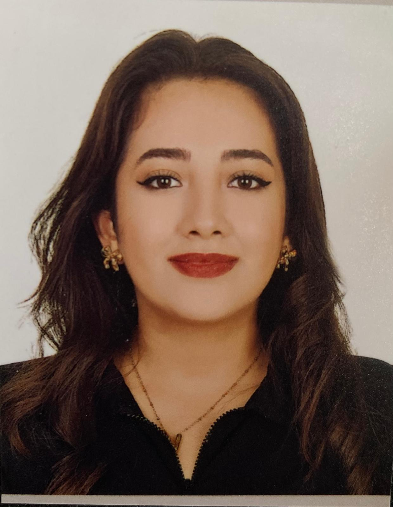

Merhaba ben Nazife Nisa Şer, Karabük Üniversitesi Bilgisayar Mühendisliği öğrencisiyim. Eğitim hayatımda yazılım geliştirme, veri yapıları ve algoritmalar gibi temel mühendislik konularına ilgi duyuyorum. Öğrenmeye açık, yenilikçi ve çözüm odaklı bir yaklaşım benimsiyorum. Teknoloji ve mühendislik alanlarında daha fazla deneyim kazanarak, kariyerime güçlü bir temel atmayı amaçlıyorum. Takım çalışmasına yatkın, iletişimi güçlü ve hızlı öğrenebilen biriyim. Kendimi geliştirmek için sürekli yeni teknolojiler keşfetmeye devam ediyorum.